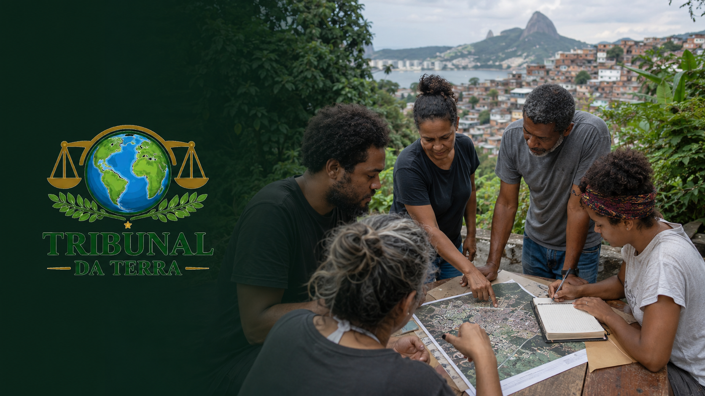

O Julgamento do Futuro: educação climática, diagnóstico territorial e justiça ambiental no Morro Santo Amaro.
O Tribunal da Terra — O Julgamento do Futuro é o núcleo de educação climática, mobilização comunitária e justiça ambiental do Instituto AME. Criado para aproximar a pauta das mudanças climáticas da realidade cotidiana das comunidades, parte de uma constatação simples: chuvas intensas, alagamentos, deslizamentos, calor extremo e falta de saneamento não atingem a todos da mesma forma — pesam mais sobre territórios que já convivem com desigualdades sociais e urbanísticas, como o Morro Santo Amaro.
O nome "Tribunal" não é literal: o núcleo não substitui o Poder Judiciário nem realiza julgamentos formais. Ele usa a linguagem simbólica de um tribunal como ferramenta pedagógica e política — um espaço de escuta onde a comunidade denuncia um problema ambiental do território, investiga suas causas, debate responsabilidades e constrói junto as soluções possíveis.
Para o núcleo, não existe justiça climática sem justiça territorial, e não existe adaptação climática sem participação comunitária. Os moradores não são tratados apenas como população vulnerável: são reconhecidos como produtores de conhecimento, agentes de prevenção e protagonistas da transformação de seus territórios.
📄 Documento institucional do Tribunal da Terra
Conhecimento científico traduzido em linguagem simples, acessível e conectada à realidade dos moradores.
Mapeamento de problemas, riscos, vulnerabilidades e recursos ambientais do território.
Moradores como participantes ativos da produção de dados sobre seu próprio território.
Debate sobre quem é mais afetado pelos impactos climáticos e quais desigualdades aumentam a vulnerabilidade.
Estratégias comunitárias de preparação, resposta e recuperação diante de eventos extremos.
Dados e demandas do território transformados em propostas e diálogo com o poder público.
Projetos de adaptação, educação ambiental, infraestrutura verde e segurança hídrica.
O Tribunal da Terra é coordenado por Barbara Fernandes, mobilizadora comunitária e pesquisadora de dados sociopolíticos e socioeconômicos.
Barbara tem experiência em análise de dados territoriais para subsidiar ações comunitárias e em pesquisas sociais em territórios periféricos, atuando diretamente na coordenação de iniciativas voltadas à educação crítica, inclusiva e transformadora, à mobilização de redes e à justiça socioambiental — na interface entre educação, justiça social e meio ambiente.
Some forças com a gente em ações de educação e justiça ambiental.